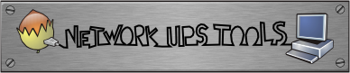

|
|
this is a Work In Progress document. |
|
|
this is a Work In Progress document. |
…
include design.txt
include developers.txt
include commands.txt
include new-drivers.txt
Comment start by an intro on generic drivers?
extending drivers
Basic serial
USB
SNMP
… fenton, megatec⇒ blazer, …
add sub notes on(?): - outlet collection implementation - …whatever more has to be known
include new-names.txt
Comment: this file should be renamed. it's not new anymore!
Comment this content is to be created from scratch.
Intro idea: "NUT provides bindings, for several common languages, that are presented below. If none suits you, you can implement one easily using the Network protocol information. This approach has been used to create the Python PyNUT module and the Nagios check_ups plugin, which can serve as a reference."
man/upsclient.3
NUT provides helper scripts to ease the configuration step of your program, by detecting…
libupsclient-config.1 + pkg-config
… Comment: content from scripts/python/README + point scripts/python/module/test_nutclient.py
Comment: The binding has to be tested and probably updated before we can document it! The content of this § is to be ripped from the UPS::Nut module README:
include protocol.txt
include ideas.txt
Comments
check to refresh and integrate the tasks list and feature requests list
add "Generic ?Ascii? driver": I've got to think more about that, but the recent solar panel driver, and the powerman internal approach of a generic engine with a scripting interface is a cool idea. Ref http://powerman.svn.sourceforge.net/viewvc/powerman/trunk/etc/apcpdu.dev?revision=969&view=markup
integrate the (future) new powerman LUA engine (maybe/mustbe used for the driver above?) for native PDU support
see how we can help and collaborate with DeviceKit-power
include sock-protocol.txt